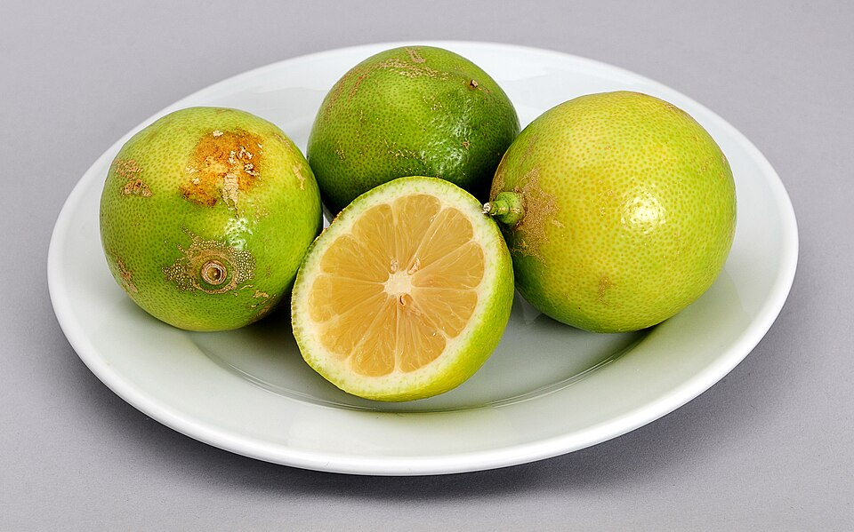

Doces
Musse de manga com leite de coco

Ingredientes
- 1 envelope de gelatina sem sabor
- 1 garrafinha de leite de coco (200 ml)
- 2 xícaras (chá) de manga em cubos
- 2 claras
- 2 colheres (sopa) de açúcar
- Folhas de hortelã para decorar
Modo de preparo
- Hidrate a gelatina no leite de coco 5 minutos e dissolva em banho-maria. Bata com a manga.
- Bata as claras em neve com o açúcar até suspiro e misture ao creme.
- Distribua em taças, gele 4 horas e decore com hortelã.